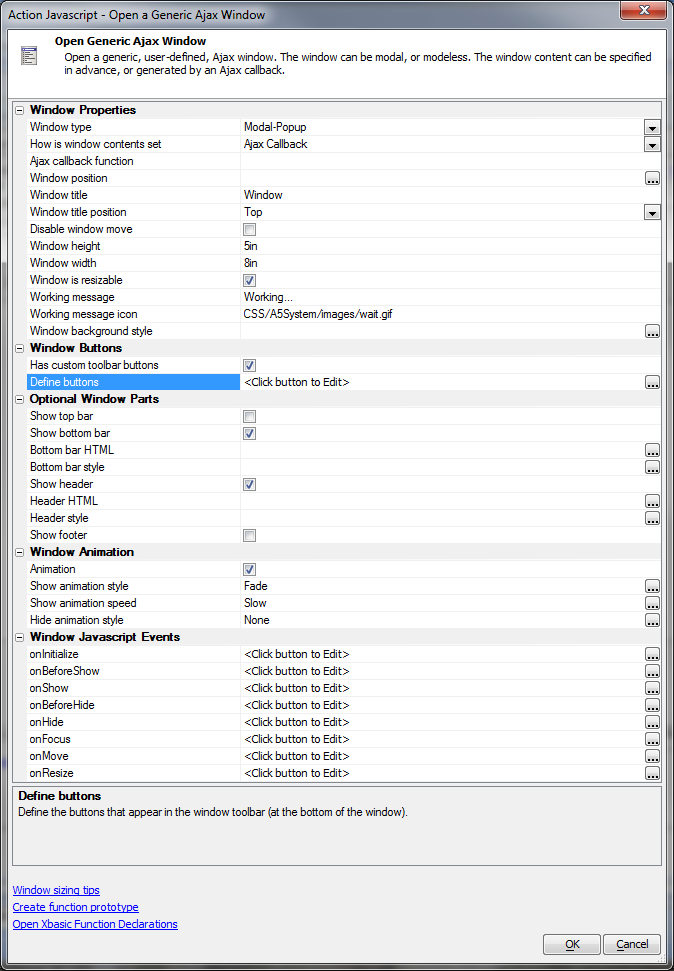
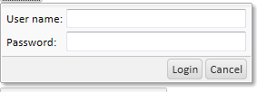
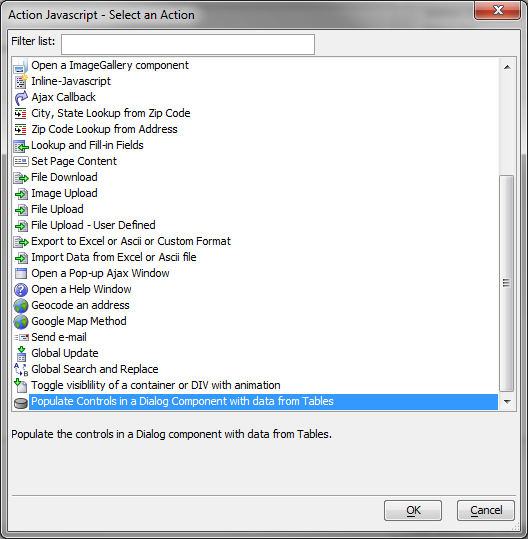
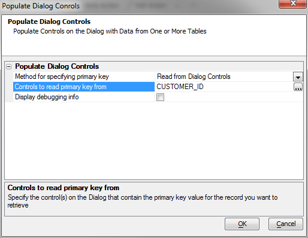
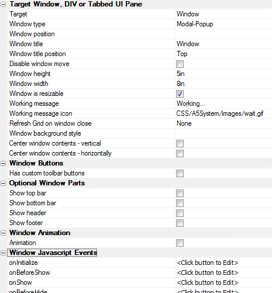
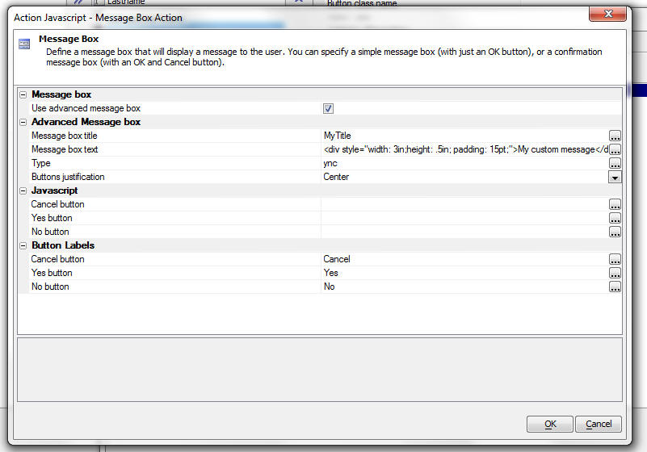
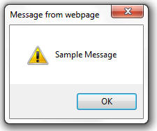
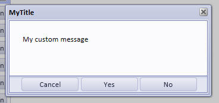

Action Javascript Improvements
Table of contents
- Button to Open Other Component Types in Windows
- Additional options for the target when opening an A5W page
- New Action - Geocode an Address
- Import action new server-side event
- Action Javascript - Send Email
- Global Update Operation to Update a Field in Multiple Rows in a Grid
- Global Search and Replace Operation in a Grid
- Using Action Javascript to toggle the show/hide state of any arbitrary DIV or 'container' using animation
- Open a Grid Component - Invoking Server-side Events Handlers
- Action Javascript - Ajax Windows - User-Defined Buttons
- Grid and Dialog Component - Open in Window - Dropdown Window Style
- Dialog Component: Populate controls from data
- Grid Component: Open a Dialog Component to Edit Current Record in Grid or add a new Record
- Binding Arguments to JavaScript
- Lock/Unlock Screen or Element
- Open Dialog as an Alternate Record View
- Open a Dialog - New Property - Use cached Dialog
- Geolocation: Get and track the user's location
- Pop-up Windows - Removing the Close Icon
- Open a Component in a pop-up window: Optional window parts
- Grid and Dialog Component - Message Box Action - Advanced Message Box
- Grid and Dialog Component — Fade-Out Message
- Also see
Button to Open Other Component Types in Windows
When you use Action Javascript to create a button to open a window, or display content in a DIV or TabbedUI Pane, previously the types of objects that you could open were limited to:- Grid Components
- Reports
- A5W Pages
Additional options for the target when opening an A5W page
This action now has additional options for the target. Previously, the target could be a pop-up Ajax window, a DIV or a Tabbed UI Page. Now you can also specify 'Browser window' to open the target page in a new browser window.When you select the 'Browser window' option, you can specify several different options to control different aspects of the browser window.
Watch video
New Action - Geocode an Address
This new action allows you to do an ajax callback, passing back the address in the current Grid row or the current Dialog. A call to a web service is then made to get the latitude and longitude of the address. This information is then returned to the browser where it will fill in the latitude and longitude field in the current record you are editing. Geocoding addresses is useful if you want to display markers on a map. The built-in Google Map feature allows you to easily display markers on a map for the addresses in your Grid. The process of placing markers on the map is much more efficient if you have latitude/longitude values for each address.Import action new server-side event
A new server-side event has been added. The 'Pre-process uploaded file' server-side event is called if the user uploads an ascii file. The event is called after the data has been uploaded, but before the file is processed in any away. The event was added because in some cases a user might be uploading a file that does not have column headings in the first row. This event will allow you to pre-process the ascii file that was uploaded and add in column headings in at the top of the file.Action Javascript - Send Email
A new action has been added to Action Javascript. You can now create an action that sends an e-mail. The e-mail message can be defined in the action, or you can specify the name of a message that is stored in the Repository. The message can contain placecholders for fields in the current record (e.g. {firstname}). The placeholders can include Xbasic functions (e.g. Hello {upper(firstname)}. You can specify if the e-mail should be sent immediately, or queued (by adding a new task to the new Work Queue table). Since connecting to a SMTP server can be quite slow, in a high traffic application, it is generally a good idea to queue sending e-mail messages.You are responsible for processing the Work Queue. Simply adding a task to the Work Queue will not cause it to be processed unless some job reads the Work Queue and acts on the tasks in the Queue.
Global Update Operation to Update a Field in Multiple Rows in a Grid
When doing data entry into a Grid there may be times when the user wants to copy a value from one row to multiple rows in the Grid. Using Action Javascript is is easy to make a button that does a 'global update' operation on all visible rows in the Grid.It is important to recognize that the action shown in this video is a 'client-side' action. No data is actually written to the database until the user clicks the 'Submit' button.
Watch Video
Global Search and Replace Operation in a Grid
When doing data entry into a Grid there may be times when the user wants to perform a search and replace operation on the data the currently visible rows in the Grid. Using Action Javascript, it is easy to make a button does a 'global search and replace' on all visible rows in the Grid.It is important to recognize that the action shown in this video is a 'client-side' action. No data is actually written to the database until the user clicks the 'Submit' button.
Watch Video
Using Action Javascript to toggle the show/hide state of any arbitrary DIV or 'container' using animation
Animation is built into many of the objects, but there may be times when you want to animate some arbitrary DIV or container. This is now very easy using Action Javascript. You can define complex animations without having to write any code.Watch Video
Open a Grid Component - Invoking Server-side Events Handlers
When you have a client-side event handler (such as a button's onClick event), that opens a Grid (in a pop-up Ajax window, a div, a tabbed UI pane, etc), you might want to execute some Xbasic on the server before the Grid is executed on the server. This topic discusses how you can do this.First some background. The first time a Grid is opened in a pop-up window, the {grid.object}.openChildGrid() method is called. If the pop-up window is then closed, and the event is executed a second time, the {grid.object}.synchronizeGrid() method is called. These two events now set variables (__openChildGrid and __synchronizeGrid) that you can test for in the onGridExecute server-side event. If the variables are found, then you know that the user has just invoked an event that will open a Grid.
Here is some sample code that you can add to the onGridExecute server-side event:
dim flagExecuteSpecialEvent as l = .f.
if eval_valid("request.variables.__openChildGrid") then
if request.variables.__openChildGrid = "true" then
flagExecuteSpecialEvent = .t.
end if
end if
if eval_valid("request.variables.__synchronizeGrid") then
if request.variables.__synchronizeGrid= "true" then
flagExecuteSpecialEvent = .t.
end if
end if
if flagExecuteSpecialEvent = .t. then
mySpecialEvent(e)
end ifWatch Video
Action Javascript - Ajax Windows - User-Defined Buttons
The builder now allows you to define buttons to place in the window 'toolbar' which appears at the bottom of the window.
For example, in the window below, the 'Login' and 'Cancel' button have been placed in the window toolbar.

Grid and Dialog Component - Open in Window - Dropdown Window Style
If a Grid or Dialog component is opened in a pop-up window and if the window is configured to use the 'Dropdown' style, then a new property is shown in the Action Javascript builder.The property is 'Allow auto-close of dirty Grid/Dialog'. When a window uses the 'Dropdown' style, clicking anywhere off the window will cause the window to close. If the window contains a Grid or Dialog component, before the window is closed, a check is made to see if the Grid or Dialog in the window is dirty. If it is, then by default, the window will not close. However, there may be applications in which you want the window to close, regardless of whether the Grid or Dialog in the window is dirty or not. Checking this new property will give you that behavior.
Dialog Component: Populate controls from data
This action can be bound to a dialog button or link to populate the controls from the data in a SQL table.

See video D21
Grid Component: Open a Dialog Component to Edit Current Record in Grid or add a new Record
Only for Dialogs bound to SQL tables at present. See video D24Binding Arguments to JavaScript
When you use Action Javascript to open a Grid, Report, Dialog, Custom Component, etc. you often need to bind the value of an argument to a value from the parent Component. For example, you might bind the value of 'arg1' to the value of the Lastname field in the current Grid row.Now, instead of binding an argument to the value of a field in the Grid or Dialog, you can specify an arbitrary Javascript function to execute. The argument is bound to the value that this Javascript function returns.
Watch Video
Lock/Unlock Screen or Element
A new action has been to lock, or unlock the screen, or an element. This is commonly done during an Ajax callback. See Video D27Open Dialog as an Alternate Record View
New Action for opening a Dialog as an alternate view of the record currently being edited in a Grid - See Video D28.Part 1
Part 2
Open a Dialog - New Property - Use cached Dialog
The Action Javascript action Open a Dialog now has a new property Use cached Dialog that will, in certain circumstances, allow for a significant improvement in performance the second and subsequent times the action is invoked and the Dialog is opened. The performance improvement will only be noticeable on large Dialogs with many bindings, but in that case it can be dramatic.To see the change, you will need to edit and resave your action.
Geolocation: Get and track the user's location
You can use Action Javascript to get the location of the user and store that information in the Grid or Dialog object. You can also fire events when the user's location changes. This is particularly useful in the case of a mobile device.Flash player not available.
Pop-up Windows - Removing the Close Icon
Some users have requested information on how to completely remove the Close icon from the title bar of a pop-up ajax. This is easily done by placing this Javascript in the onShow event of the window://To remove the x button, but leave the title bar
this.clearTools();
//To remove the title bar completely:
this.setDisplay('title',true);Open a Component in a pop-up window: Optional window parts
Subscription featureWhen you use Action Javascript to open a Component in a pop-up window, you can now defined optional parts for the pop-up window. These optional parts include a header, footer and toolbar.

Watch Video
Grid and Dialog Component - Message Box Action - Advanced Message Box
Subscription featureWhen you create an action to display a message box, instead of using the built-in Javascript alert() and confirm() functions, which are very primitive, and do not allow custom styling, you can now choose an advanced option which allows you to create a styled message box that uses the A5.messageBox() function in the Alpha Anywhere Javascript library. Also, when you use the advanced option you can define custom buttons to appear on the dialog. You are not limited to OK, Cancel, Yes and No.
Watch video
Message box builder with the Advanced option selected:
Note that the builder allows you to control the button labels, the Javascript that gets executed when any of the buttons gets clicked, and the justification of the buttons.

The image below shows a message box created with the built-in Javascript alert() function.

Here is a message box using the advanced options.

Grid and Dialog Component — Fade-Out Message
Subscribers can define an action to display a message that automatically fades out of view over a certain interval. Fade-out messages are ideal for providing feedback to a user to indicate, for example, that some action has been completed.Watch video
Also see
Google Map Component Action JavaScript actions,Using a Map as an Alternate Grid View,
Web Projects Control Panel Enhancements